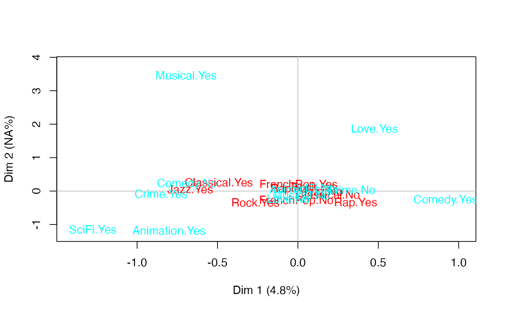

multiMCA.RdPerforms Multiple Factor Analysis, drawing on the work of Escoffier and Pages (1994). It allows the use of MCA variants (e.g. specific MCA or class specific MCA) as inputs.
multiMCA(l_mca, ncp = 5, compute.rv = FALSE)
| l_mca | a list of objects of class |
|---|---|
| ncp | number of dimensions kept in the results (default is 5) |
| compute.rv | whether RV coefficients should be computed or not (default is FALSE, which makes the function execute faster) |
This function binds individual coordinates from every MCA in l_mca argument, weights them by the first eigenvalue,
and the resulting data frame is used as input for Principal Component Analysis (PCA).
Returns an object of class 'multiMCA', i.e. a list:
a list of numeric vector for eigenvalues, percentage of variance and cumulative percentage of variance
a list of matrices with results for input MCAs components (coordinates, correlation between variables and axes, square cosine, contributions)
a list of matrices with results for individuals (coordinates, square cosine, contributions)
a list with informations about input data
a list of matrices with results for categories and variables in the input MCAs (coordinates, square cosine, test-values, variances)
lists the content of the objects in l_mca argument
a matrix of RV coefficients
Escofier, B. and Pages, J. (1994) "Multiple Factor Analysis (AFMULT package)". Computational Statistics and Data Analysis, 18, 121-140.
Nicolas Robette
plot.multiMCA, varsup, speMCA, csMCA, MFA, PCA
## Performs a specific MCA on music variables of 'Taste' example data set, ## another one on movie variables of 'Taste' example data set, ## and then a Multiple Factor Analysis. data(Taste) getindexcat(Taste[,1:5])#> [1] "FrenchPop.No" "FrenchPop.Yes" "FrenchPop.NA" "Rap.No" #> [5] "Rap.Yes" "Rap.NA" "Rock.No" "Rock.Yes" #> [9] "Rock.NA" "Jazz.No" "Jazz.Yes" "Jazz.NA" #> [13] "Classical.No" "Classical.Yes" "Classical.NA"#> [1] "Comedy.No" "Comedy.Yes" "Comedy.NA" "Crime.No" #> [5] "Crime.Yes" "Crime.NA" "Animation.No" "Animation.Yes" #> [9] "Animation.NA" "SciFi.No" "SciFi.Yes" "SciFi.NA" #> [13] "Love.No" "Love.Yes" "Love.NA" "Musical.No" #> [17] "Musical.Yes" "Musical.NA"mca2 <- speMCA(Taste[,6:11],excl=c(3,6,9,12,15,18)) mfa <- multiMCA(list(mca1,mca2)) plot.multiMCA(mfa)